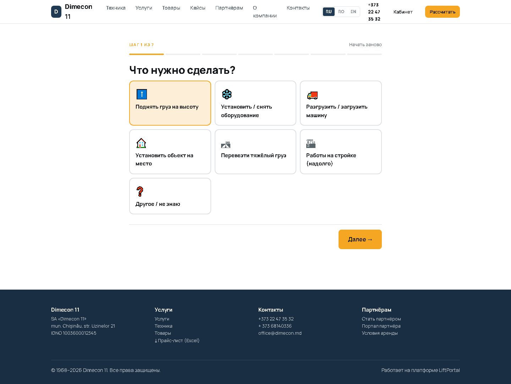
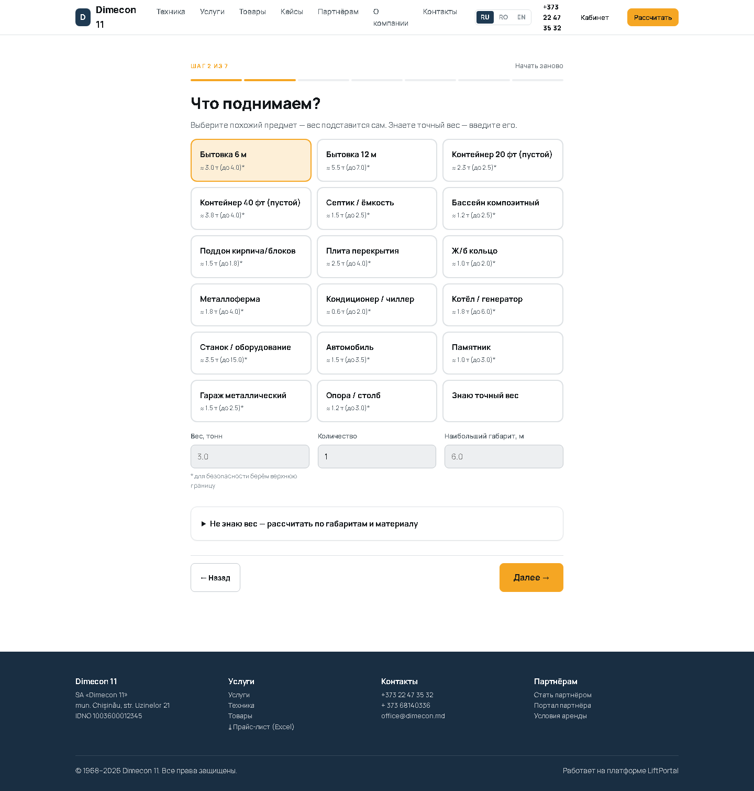
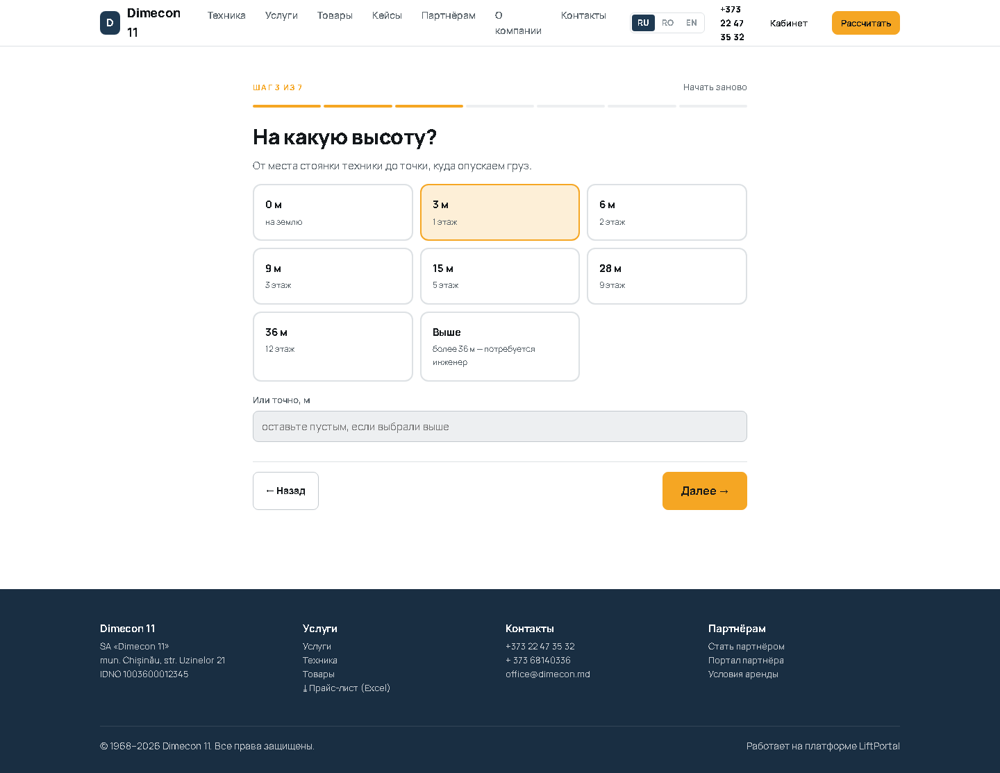
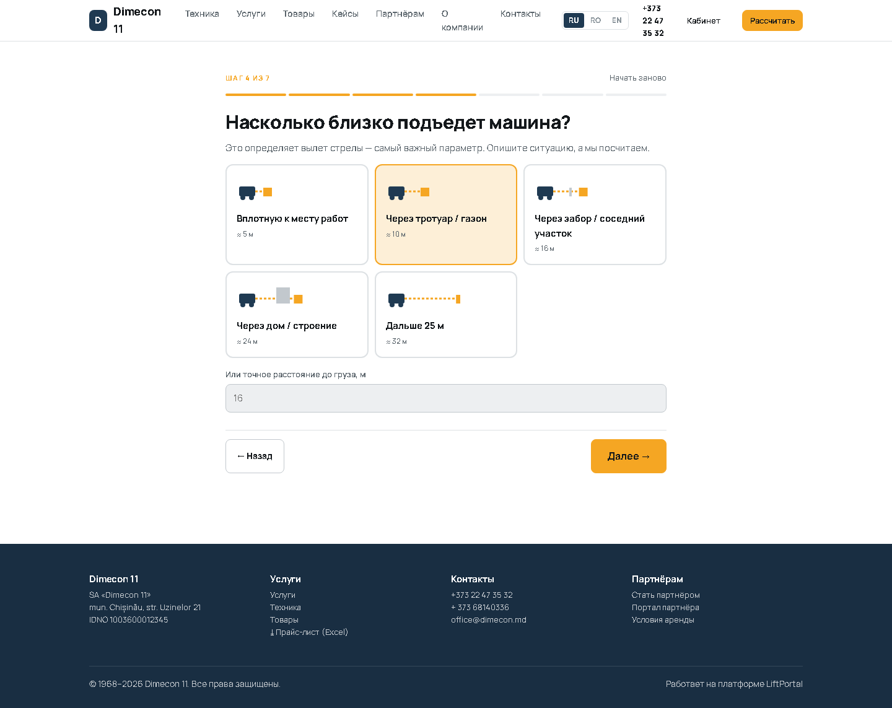
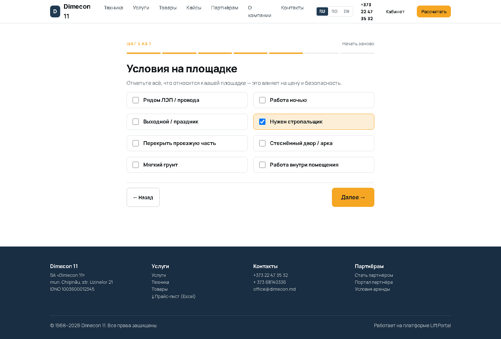
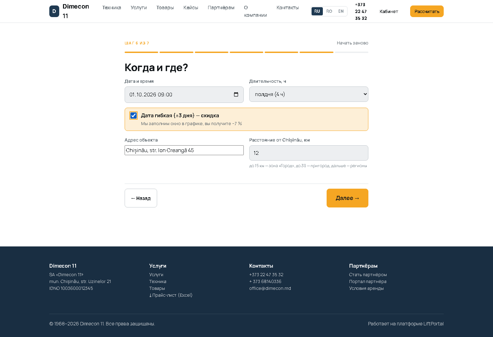
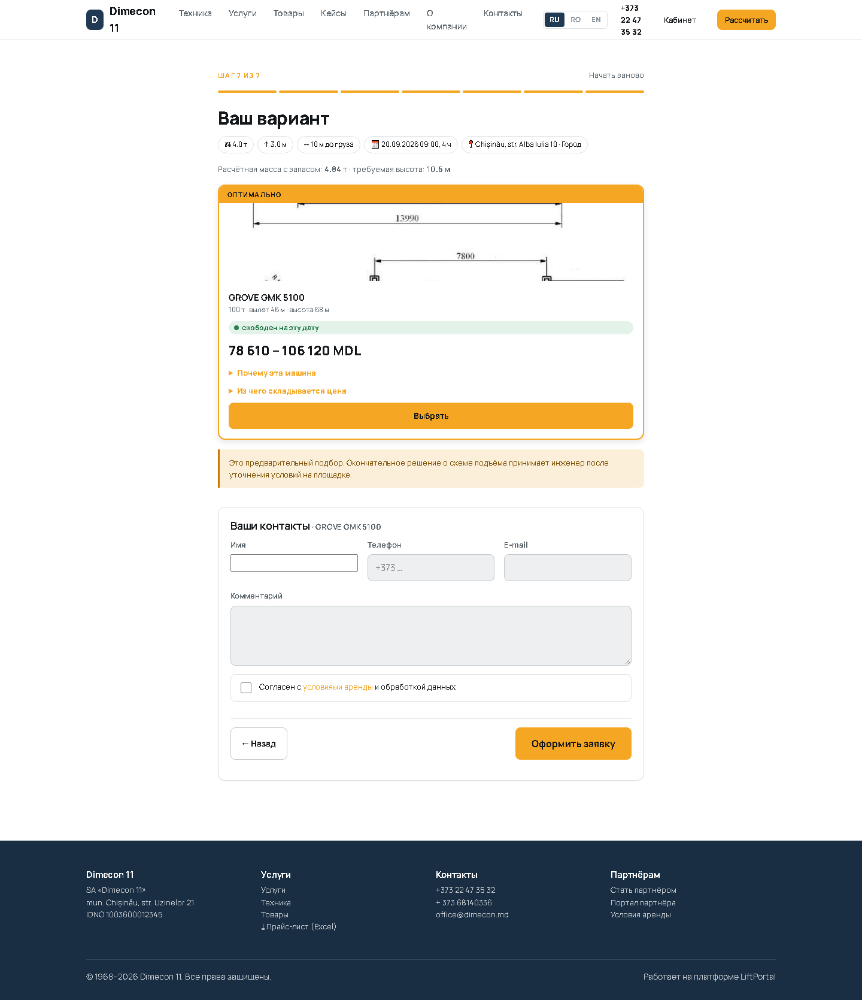
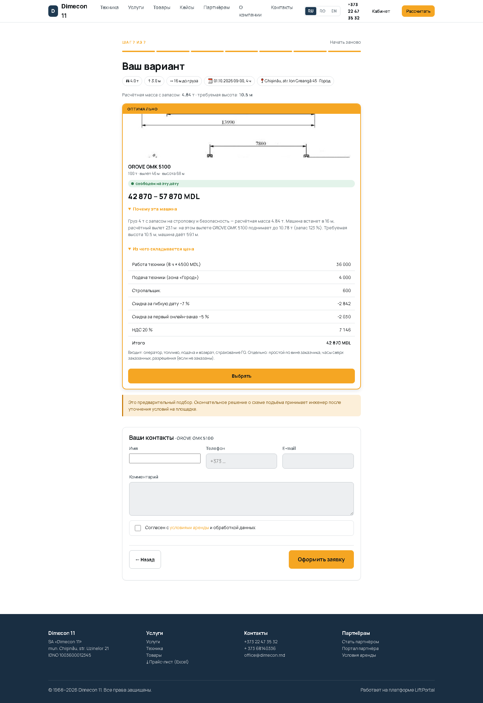
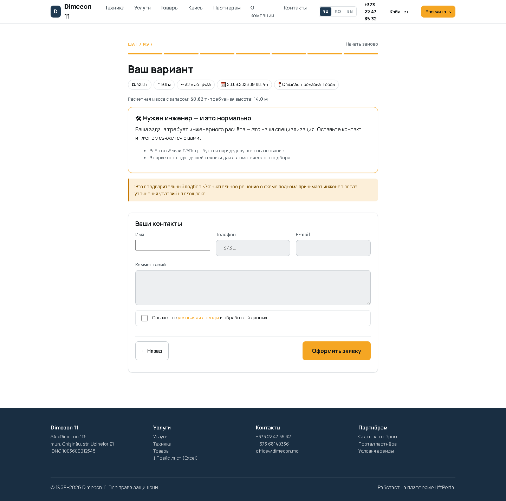

Проверка инженерного подбора крана и построчного расчёта цены на реальном парке заказчика.
Годен
| Результат | Проверка | Фактически |
|---|---|---|
| ✔ OK | будни, 4 ч, город: сумма строк = итогу | строки 5760, нетто+НДС 5760 |
| ✔ OK | будни: итог совпадает с ручным расчётом | движок 5760, ручной 5760 |
| ✔ OK | НДС 20 % от нетто | 960 vs 960 |
| ✔ OK | минимальная смена: 1 ч тарифицируется как 4 ч | 1 ч -> 5760, 4 ч -> 5760 |
| ✔ OK | воскресный коэффициент x1.4 применён к работе | разница 1440 |
| ✔ OK | ночь: коэффициент 1.5 и осветительная установка в строках | Работа техники (4 ч × 900 MDL); Надбавка за время (ночь) × 1.5; Подача техники (зона «Город»); Осветительная установка; НДС 20 % |
| ✔ OK | зона «Регионы»: подача 2500 + перепробег | 3600 (ожидали 3600) |
| ✔ OK | срочность x1.3 добавлена отдельной строкой | итого 9590 |
| ✔ OK | скидка за гибкую дату уменьшает итог | 5360 < 5760 |
| ✔ OK | потолок коэффициента условий 1.5 соблюдён | фактически x1.4 |
| ✔ OK | потолок суммарной скидки 25 % | скидок на 10000 из 40000 |
| Результат | Проверка | Фактически |
|---|---|---|
| ✔ OK | расчётная масса = (груз + строповка) x 1,10 | 3.63 т |
| ✔ OK | требуемая высота = высота + груз + строповка + 2 м | 10.5 м |
| ✔ OK | подбор вернул варианты | 3 шт |
| ✔ OK | KC-6471: запас >= 10 % | запас 10 %, таблица 4.01 т на 18.0 м |
| ✔ OK | KC-6471: вылет таблицы >= требуемого 16.6 м | 18.0 м |
| ✔ OK | COMANSA 10LC 140: запас >= 10 % | запас 29 %, таблица 4.7 т на 20.6 м |
| ✔ OK | 10LC 140: вылет таблицы >= требуемого 15.8 м | 20.6 м |
| ✔ OK | GROVE GMK 5100: запас >= 10 % | запас 276 %, таблица 13.64 т на 19.6 м |
| ✔ OK | 5100: вылет таблицы >= требуемого 17.1 м | 19.6 м |
| ✔ OK | эскалация при 42 т и ЛЭП | 2 причин |
| ✔ OK | лёгкий груз не уходит в эскалацию | вариантов 3, эскалация False |
| Результат | Проверка | Фактически |
|---|---|---|
| ✔ OK | бетон 2x1x1 м = 5 т ±15 % | 4.25–5.75 т |
| ✔ OK | полая ёмкость считается по стенкам, а не по объёму | 14.41–19.5 т |









docs/*.log.
Испытания провёл: Claude (Claude Code), автоматизированный прогон.